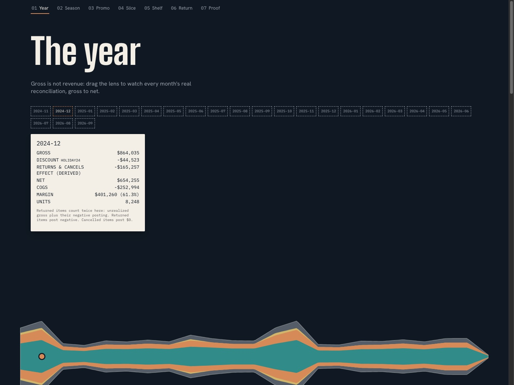

React · D3 · Motion · Retail Analytics · 2026-10
SIGNALROOM
A copper ribbon of 24 real months of net revenue that coils onto a 12-spoke dial, so a year-over-year comp becomes something you can see instead of calculate.

Three visual concepts were researched and scored before building (design/research/ in the repo); COIL won 32/35 against a 7-criterion rubric. Every number on the site traces to a dbt-duckdb star schema over a real, seeded 24-month synthetic retail dataset, verified by 15/15 dbt tests (including a from-scratch SQL reconciliation gate) and 52/52 Vitest cases proving the in-browser aggregator matches real SQL. No backend, no API key, no server: fully static, deployed from GitHub Pages. The opening sequence currently shows the wordmark and a static caption rather than the animated particle system originally planned; see Limitations.
01 — The problem
Most BI dashboards show you a KPI tile row and a chart grid and ask you to trust the pipeline behind them. This project asks a narrower, harder question: for a retail business, almost nothing interesting varies by region, nearly everything interesting varies by time. Could the entire site be built around that one real finding, with a single visual object carrying the reader through it, rather than a dashboard bolted onto a report?
02 — What I built
The site's entire visual identity is one copper ribbon: a 23-point array of real monthly net revenue (gross, discount, net, COGS, margin and units, all defined once in docs/metrics.md). Unrolled, it's the timeline. Wound onto a 12-spoke dial with Nov at 12 o'clock, the same calendar month from both years lands on the same spoke, so a year-over-year comparison becomes a visible alignment instead of a subtraction. The ribbon never disappears between scenes; it morphs into a context strip for the cross-filter view and flattens into a calendar axis for the cohort view.
- Print the slip: drag the lens to any of the 23 months and watch the real reconciliation print line by line, gross down to margin, in a thermal-receipt voice. December 2024's $864,035 gross becomes $654,255 net on screen, not in a tooltip.
- The Coil: a pinned, scroll-scrubbed transform winds the ribbon onto the 12-spoke dial, so December 2024 sits on the same spoke as December 2025 and the July 2026 comp (down 13.2%, because a promo ran the year before, not the year after) becomes visible rather than calculated.
- Call the 80: drag a guess at how many of 112 products make 80% of net revenue, then watch the real cumulative curve answer: 70, not the 20-ish an 80/20 rule would predict. Changing category or month range recomputes the real answer live; your guess stays put.
A security-review-style pass on the design docs themselves caught a real bug before any code was written: a per-category distinct completed-order count can't be pre-aggregated and summed without double-counting orders that span categories (62,008 summed vs. ~41,000 real), so AOV and order counts are deliberately left out of this version rather than shown wrong.
03 — How it was built
- 01
Real 24-month retail star schema, not a spreadsheet of made-up numbers
A seeded generator (seed 20260101, fully reproducible) produces 2,400 customers, 112 products across 4 categories, 11 stores, ~46,900 orders and ~82,400 order items with real promo windows, holiday seasonality, and an 88/9/3 completed/returned/cancelled split. dbt with the dbt-duckdb adapter (no Postgres, no Docker needed) builds the star schema, and a singular SQL test recomputes every
fact_salesrow's net revenue directly from the raw seeds, independent of any mart logic, to catch a join fan-out or a sign error.15/15 dbt tests passing, including: reconciliation_fact_sales_matches_raw.sql (every row within $0.001 of an independent recomputation) - 02
Three real visual concepts, scored, before any component was built
A Creative Director pass researched real BI/dashboard design references and produced three distinct concepts (a receipt-tape timeline, a store floor plan, and the coiled ribbon), scored against the same 7-criterion rubric. The floor plan scored only 23/35 because it implied a store-level data grain the fixtures don't actually have -- a concept has to survive contact with what the data can honestly show, not just look good.
- 03
A verified bug in the aggregation layer, caught by its own parity test during development
The plan was to filter a pre-aggregated grain in a Web Worker rather than ship a full SQL engine to the browser. A parity test comparing the JS aggregator's output against SQL run fresh on
fact_sales, run while that layer was being built, caught a real defect: completed-order counts, pre-aggregated per category and re-summed, double-count any order with items in more than one category. Fixed by moving order counts to a separate region x channel x month grain (no category), documented indocs/metrics.md, and leaving AOV out of this version rather than showing a silently wrong number. - 04
A real accessibility pass that found and fixed five actual bugs
An axe-core scan across all 7 scenes at both 1440px and 390px (14 cases) found real violations, not style nitpicks: a copper-on-cream text color failing WCAG AA contrast on several small elements despite the design system's own rule restricting it to large text, an incomplete ARIA grid missing its required row structure, and an invalid ARIA attribute pairing on a mobile filter control. Each was fixed at the root (new CSS tokens, corrected markup), not suppressed.
04 — Results
19/19 Playwright tests passing (14 accessibility -- zero serious/critical axe-core violations across every scene at 1440px and 390px -- plus keyboard navigation, reduced motion, and zero non-origin network requests), 52/52 Vitest (reference-value tests reproducing every number in the concept's acceptance checks exactly, geometry tests, and the SQL-parity suite), tsc clean, lint clean, production build clean. Frame pacing measured on this Mac (Mac15,6) in real headed Chromium during the heaviest interaction (rapid repeated scroll-scrub): p50 8.3ms, p95 10.2ms, 0% of frames over the 16.7ms or 33ms budget, both unthrottled and under 4x CPU throttling as a mobile proxy.
Desktop, tablet and phone are three deliberately different compositions, not one reflowed layout: phone gets a coil-first hero, a bottom-sheet reconciliation slip, and a Region/Category/Channel segmented control in place of the cross-filter grid; tablet transposes that same grid to 4 columns by 5 rows. Verified by direct visual inspection of real screenshots at all three widths, not just by the code compiling.
05 — What I'd do next
- AOV and completed-order counts, once a visitor-facing framing for "orders containing this category" is designed honestly around the real constraint documented in
docs/metrics.md. - Full path-morph forms for the Promo scene (currently a tilted/recolored coil rather than a distinct geometric form).
- The remaining scene-by-scene choreography deltas in
responsive-spec.mdsection 2 (phone Season year-separation scrub, phone Pareto 90-degree rotation) beyond the core structural compositions already built.